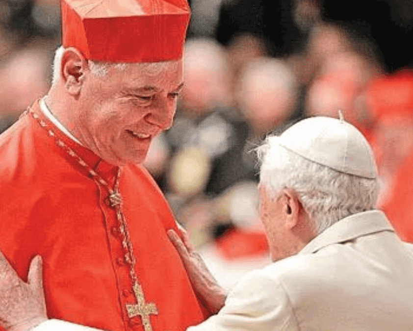

Catálogo de noticias

Benedicto XVI, dos libros para descubrir su gran humanidad
Se presentaron los volúmenes publicados por la editorial San Pablo dedicados al Papa bávaro:... ver másEl funeral del papa Benedicto XVI, en imágenes.
Las exequias, después de tres días de capilla ardiente, serán “solemnes” pero “sobrias”, por expreso deseo del difunto... ver más

Cardenal Müller: Por qué Benedicto XVI es un maestro para la Iglesia actual
Ha reforzado a los cristianos en la fe, los ha animado en la esperanza y los ha encendido de amor a Dios... ver más200.000 fieles visitan la capilla ardiente de Benedicto XVI, que cierra para dar paso a su funeral
La reina emérita, doña Sofía, y el ministro de la Presidencia, Félix Bolaños, acuden a la basílica de San Pedro para rendir homenaje a Ratzinger... ver más
Otro secretario del papa Benedicto XVI presentó un libro en el que narra sus vivencias con el Sumo Pontífice.
A diferencia de la obra de Gaenswei, “Mis días con Benedicto XVI” es una texto ligero y lleno de fotografías y buenos recuerdos... ver más
¿Benedicto XVI santo?: le atribuyen un milagro en 2013 y crecen los pedidos de reconocimiento.
El episodio ocurrió hace casi 20 años, cuando el entonces pontífice se reunió con Peter Srsich, un estadounidense de 18 años enfermo de cáncer... ver más
En las primeras horas de capilla ardiente, 65.000 personas asistieron al Vaticano a despedirse de Benedicto XVI.
Se calcula que son 20 segundos lo que cada asistente puede estar ante el difunto papa emérito. Este martes y miércoles, la basílica de San Pedro estará abierta durante doce horas, de 7:00 a 19:00 horas... ver másEl secretario de Benedicto XVI publicará sus memorias contra las “calumnias” tras la muerte del papa emérito.
En “Nada más que la verdad”, que saldrá a la venta en las próximas semanas, el autor arroja luz sobre algunos aspectos incomprendidos del ex pontífice, describe “desde dentro el verdadero mundo vaticano”, y cuenta... ver más